Then you should:
1. Draw a plot. These tools
Note: by default, the metrical scale is used.
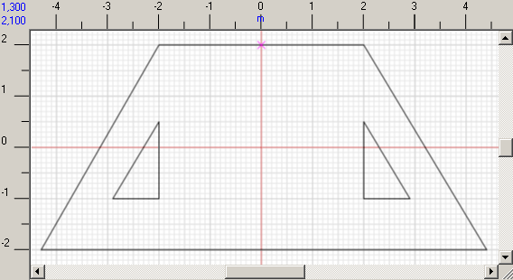
2. Select the start point. Click and select the point in the plot where to start paving tiles.
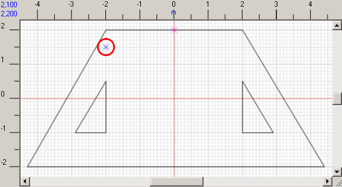
3. Select the pattern. Press
4. Modify the pattern orientation if needed: click to rotate anti-clockwise the deviation angle of the pattern relative to the horizontal axis.
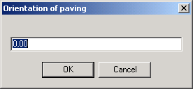
5. Click Fill to fill in the plot with tiles. Note that the task may take some time to complete.
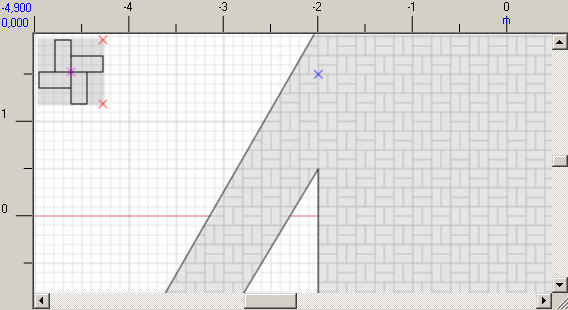
6. If you need to change the color of the particular tiles, click Select tile and specify those tiles. The tiles you specify will be marked green.
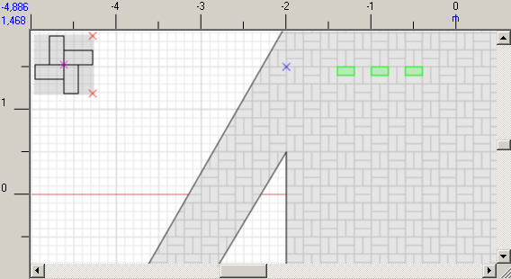
Then right click, choose Change color in the context menu and select the required color in the pop-up window.
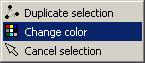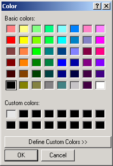
|
Note: The first color example in the Custom colors section is default. Use this color to deselect tiles custom coloring.
|
View the examples below:
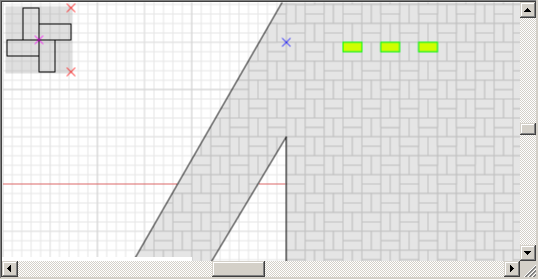
To deselect the color changes, click Cancel selection in the context menu.
These options (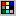 and ) are also present on the toolbar.
Below you can learn several additional ways to color pattern:
1. Select several tiles on the plot. Click the Multiply selection button . The program will use the first tile you have selected as the reference point and will try to continue the chain of colored tiles along the lines of the tiles you've selected. For better understanding, please do the following:
Select three tiles on the plot as shown below. Select the bottom left tile first to be used as a reference point:
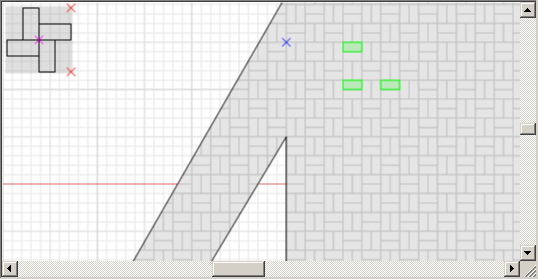
Now press . The result of your actions will be the following:
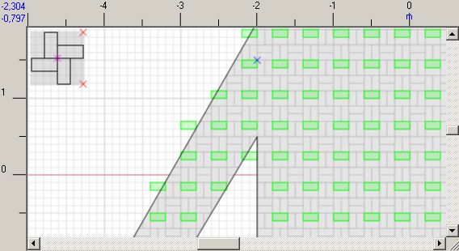
Now you can use the Change color button .
2. Click the Select tile button . Press and hold Shift and then move the pointer over the tiles to select tiles.
To view report on the number of tiles used divided by color, go to Plot > Report.
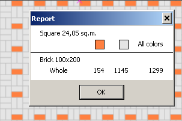
You can change orientation, reference point, and pattern and pave the plot once again.
When the desired result is reached, save the project clicking
At this point we will finish the acquaintance with the program. Information presented in this chapter is enough to understand the abilities of the program and create simple projects.
Detailed description of how to work with tiles, patterns and projects you can find in Tiles editor, Patterns editor, Developing projects.